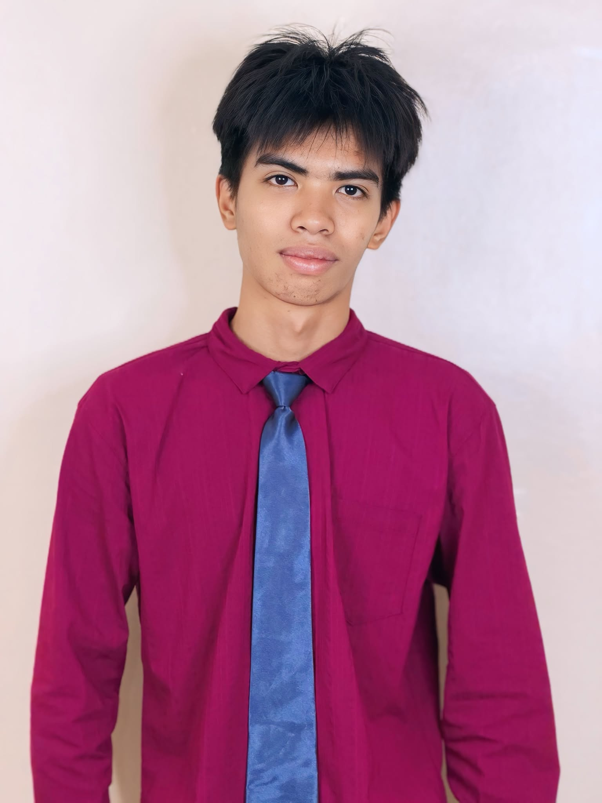

NSTP Portfolio

Hi, I'm Galera Adriel Jhon
Course: BS Information Technology
Year: 1st Year
Section: BSIT-1B
Age: 18 Years old
Status: Student
I am a Student who believes that Nothing is Impossible when you try to Explore It.
About Me
Hello! I’m Adriel. I’m a student who want to be a Software Developer or Web Developer .
This portfolio brings together my work, ideas, and learning from each module. I enjoy building new skills and finding practical ways to use what I learn.
About in NSTP (National Service Training Program)
Through the National Service Training Program(NSTP), I want to develop My Leadership Skills, Social Awareness, Deeecipline, and Sense of Responsibility. Because I believe that even a small acts of Kindness can create meaningful changes in Society.
NSTP - CWTS (Civic Welfare Training Service) Modules
My Reflection in Every Modules
My Reflection in Module 1
After studying this module, I realized that building our nation is not only the responsibility of the government but also of every citizen, including students like me. Through NSTP, I learned the importance of discipline, teamwork, leadership, respect, and helping others. As a student, I can contribute to our country through simple actions like following rules, respecting other people, keeping our surroundings clean, and helping those who are in need. Hindi naman kailangan na gumawa agad ng malaking bagay para makatulong. Even small actions can make a difference if we do them with responsibility and sincerity. For me, NSTP is not just a subject that we need to pass, but also an opportunity to learn how to become a better and more responsible citizen. I may still be a student, but I believe that I can contribute to our nation in my own simple ways. It starts with myself and how I treat and help other people.
My Reflection in Module 2
After studying Module 2, mas naintindihan ko ang importance ng pagiging isang mabuting Filipino citizen. Natutunan ko na hindi lang puro rights ang dapat nating malaman, kailangan din nating gawin ang ating responsibilities. We should respect other people's rights, follow rules, and be responsible sa ating mga actions. Natutunan ko rin ang importance ng good citizenship, leadership, and nationalism. As a student, I can practice these values by being honest, respectful, disciplined, and willing to help others. Na-realize ko rin na ang pagiging good leader ay hindi kailangan na ikaw ang laging nasusunod. A good leader is someone who listens, understands, and helps other people. Another thing I learned is the importance of voting. As a future voter, dapat marunong akong pumili ng tamang leader based on their honesty, abilities, and plans for our country. Hindi dapat basta sumunod dahil lang sikat ang isang candidate. Overall, this module taught me na ang pagiging mabuting Filipino ay nagsisimula sa simpleng bagay. Kahit student pa lang ako, I can already show my love for our country by doing what is right, respecting others, and being responsible. Hindi man malaki ang kaya kong gawin ngayon, I believe that small actions can still make a difference.
My Reflection in Module 3
mas naintindihan ko kung gaano kaimportante na umiwas sa illegal drugs and other harmful substances. Natutunan ko na ang paggamit nito ay hindi lang nakakasama sa health ng isang tao, kundi pati na rin sa kanyang family, studies, and future. I also learned that some people are influenced by curiosity, peer pressure, and personal problems, kaya importanteng marunong tayong tumanggi sa mga bagay na alam nating makakasama sa atin. I also learned about Republic Act No. 9165 or the Comprehensive Dangerous Drugs Act of 2002. This law helps protect people from illegal drugs and promotes prevention, education, and rehabilitation. As a student, I can help by spreading awareness, choosing good friends, focusing on my studies, and avoiding bad influences. Overall, this module taught me na mas mabuting piliin ang healthy lifestyle kaysa gumawa ng decisions na maaaring makasira sa future ko. I believe that staying drug-free is one way of showing responsibility not only to myself but also to my family and community.
My Reflection in Module 4
After studying Module 4, I realized how important it is to be prepared for disasters. Natutunan ko na disasters can happen anytime and anywhere, kaya dapat laging handa tayo. I learned about different types of disasters like earthquakes, floods, typhoons, and fires, and how to respond to them properly. I also learned about the importance of having an emergency plan, knowing evacuation routes, and having emergency kits ready. As a student, I can help by being aware of the risks in my area, participating in drills, and sharing what I learned with my family and friends. I also realized that helping others during disasters is very important. Even small actions like checking on neighbors or sharing information can make a big difference. Overall, this module taught me that being prepared and responsible during disasters is not just about protecting myself, but also about helping others and contributing to the safety of my community.
My Reflection in Module 5
After studying Module 5, I realized how important it is to take care of our environment. Natutunan ko na ang kalikasan ay mahalaga sa ating buhay, kaya dapat natin itong protektahan at alagaan. I learned about different environmental issues like pollution, deforestation, and climate change, and how they affect not only nature but also our health and future. As a student, I can help by practicing eco-friendly habits like reducing waste, recycling, saving energy, and planting trees. I also realized that spreading awareness about environmental protection is important. Even small actions like participating in clean-up drives or educating others can make a difference. Overall, this module taught me that taking care of the environment is a responsibility that we all share. By being responsible and making conscious choices, we can contribute to a healthier and more sustainable world for ourselves and future generations.
My Reflection in Module 6
After studying Module 6, I learned about the importance of maintaining good mental health and well-being. Natutunan ko na ang isip at puso ay hindi lamang importante sa ating buhay, kaya dapat natin itong alayin at protektahan. I learned about different aspects of mental health like stress management, emotional regulation, and seeking help when needed. As a student, I can help by practicing self-care, supporting my peers, and creating a positive and inclusive environment. I also realized that taking care of my mental health is not a sign of weakness but a sign of strength and responsibility. Overall, this module taught me that mental health is an essential part of our overall well-being and should be given the attention it deserves.
My Reflection in Module 7
After studying Module 7, I learned about the importance of building a healthy and inclusive community. Natutunan ko na ang isang malusog na komunidad ay nagsasama ng lahat ng mga tao, anuman ang kanilang origin, relihiyon, o kalagayan. I learned about the value of diversity and the need to promote equality and respect for all individuals. As a student, I can help by being a good citizen, treating others with kindness and respect, and working together to create a positive environment for everyone. I also realized that building a strong community requires active participation and commitment from all members. Overall, this module taught me that a healthy community is built on mutual respect, understanding, and cooperation.
My Reflection in Module 8
After studying Module 8, I learned about the importance of civic responsibility and active citizenship. Natutunan ko na ang pagiging isang mabuting mamamayan ay nangangailangan ng pagkakaroon ng komitment sa lipunan at pagtulong sa iba. I learned about the role of citizens in promoting social justice, participating in democratic processes, and contributing to the development of their communities. As a student, I can help by staying informed about current events, engaging in community service, and advocating for positive change. I also realized that being a responsible citizen involves not only fulfilling one's duties but also exercising one's rights and freedoms in a constructive manner. Overall, this module taught me that civic engagement is essential for building a more just and equitable society.
My Reflection in Module 9
After studying Module 9, I learned about the importance of environmental sustainability and conservation. Natutunan ko na ang ating kalikasan ay isang mahalagang resource na dapat nating protektahan para sa mga susunod na henerasyon. I learned about the impact of human activities on the environment and the need for responsible consumption and waste management. As a student, I can help by practicing eco-friendly habits, raising awareness about environmental issues, and participating in conservation efforts. I also realized that protecting the environment is not just the responsibility of individuals but also of governments and organizations. Overall, this module taught me that environmental stewardship is crucial for ensuring a sustainable future for all.
My Reflection in Module 10
After studying Module 10, I learned about the importance of personal development and self-awareness. Natutunan ko na ang pag-unlad ng isang tao ay nangangailangan ng pagkakaroon ng malaking pag-unawa sa sarili at ang mga bagay na nakakaapekto sa kanyang buhay. I learned about the significance of setting goals, managing time effectively, and maintaining a positive mindset. As a student, I can help by continuously working on myself, seeking feedback, and embracing opportunities for growth. I also realized that personal development is an ongoing process that requires commitment and dedication. Overall, this module taught me that investing in oneself is fundamental to achieving success and fulfillment in life.